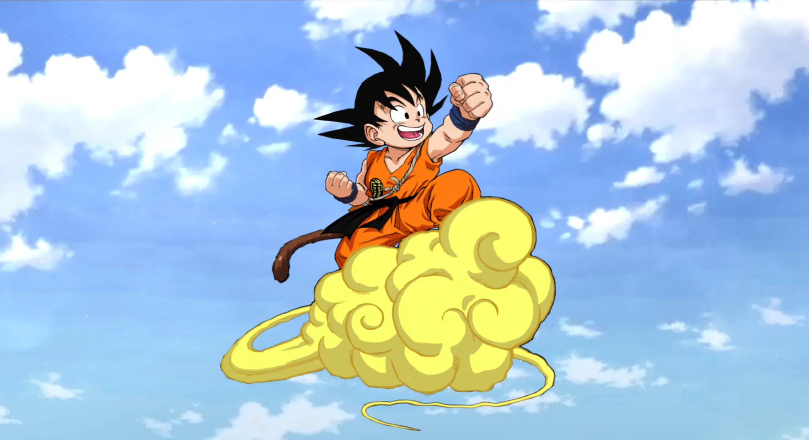

Dragon Ball (ドラゴンボール, Doragon Bōru?, litt. Dragon Ball) est un manga d'Akira Toriyama prépublié dans le magazine Weekly Shōnen Jump du 20 novembre 1984 au 23 mai 1995 et édité par Shūeisha en 42 volumes reliés du 10 septembre 1985 au 4 août 1995. Glénat publie l'édition française depuis février 1993.
L'histoire est inspirée de La Pérégrination vers l'Ouest de Wu Cheng'en, roman chinois de la fin du XVIe siècle. Dragon Ball raconte le parcours de Son Goku, un garçon à queue de singe, depuis l'enfance jusqu'à l'âge adulte, où il est amené à explorer le monde à la recherche des Dragon Balls, des boules de cristal permettant d'exaucer des vœux. Tout au long de ses aventures, il va combattre des adversaires de plus en plus forts, dont certains deviendront des alliés ou des compagnons.
Avec plus de 160 millions d'exemplaires publiés au Japon et 260 millions à travers le monde, Dragon Ball est l'un des mangas les plus vendus. Dragon Ball s'inscrit dans la culture de masse en tant que phénomène culturel ; de nombreux films, jeux vidéo et autres produits dérivés en sont issus.
Le manga a été adapté et divisé en deux séries animées produites par Toei Animation, Dragon Ball et Dragon Ball Z, avec une première fin à la fin de l'arc Cell. Elles ont été diffusées au Japon de 1986 à 1996, et en France de 1988 à 1996 dans le Club Dorothée. De plus, le studio a développé 21 longs métrages d'animation, ainsi que trois suites, Dragon Ball GT, Dragon Ball Super et Dragon Ball Daima.
